Tutorial
A. Add a primitive sphere
1. Add a primitive sphere to the scene with [Menu bar --> Add --> Primitive shape --> Sphere]
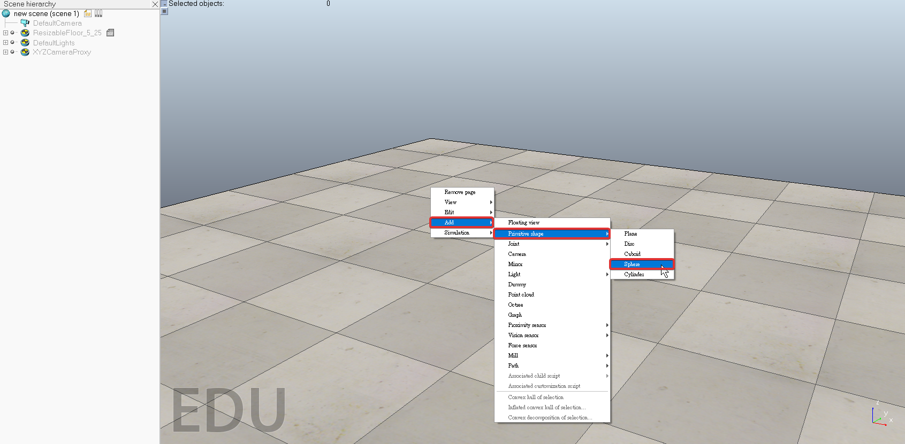
2. Diameter 0.2, adjust the X-size item to 0.2, then click OK.
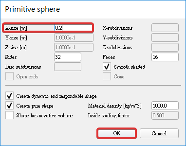
3. Enable Collidable, Measurable, Renderable and Detectable in the object common properties for that shape.
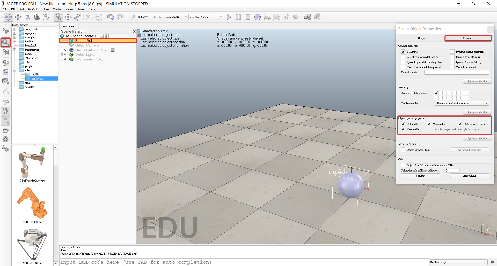
4. Click the sphere representing BubbleRob's body.
5. Click translation tab and enter 0.02 for Along Z.
6. Click Translate selection so that all selected objects by 2 cm along the absolute Z-axis.
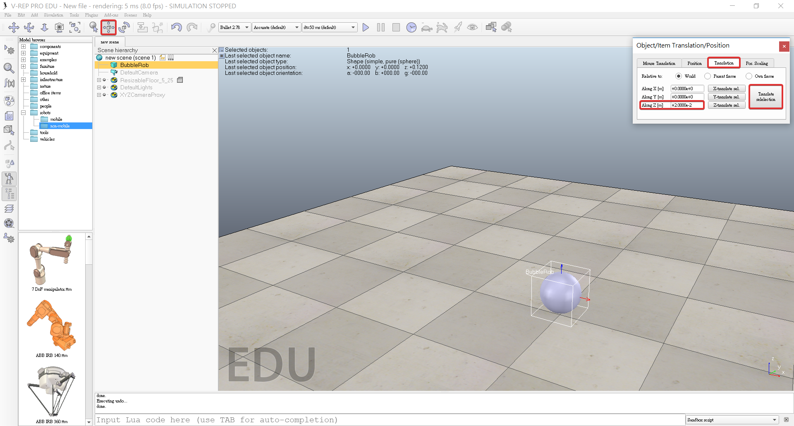
7. Double-click the sphere's name, edit and enter bubbleRob and press enter.
B. Add a proximity sensor
1. Select [Menu bar --> Add --> Proximity sensor --> Cone type]
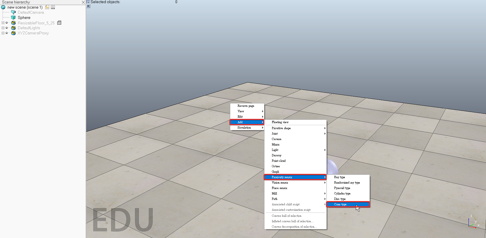
2. In the orientation dialog on the orientation tab, we enter 90 for Around Y and for Around Z, then click Rotate selection.
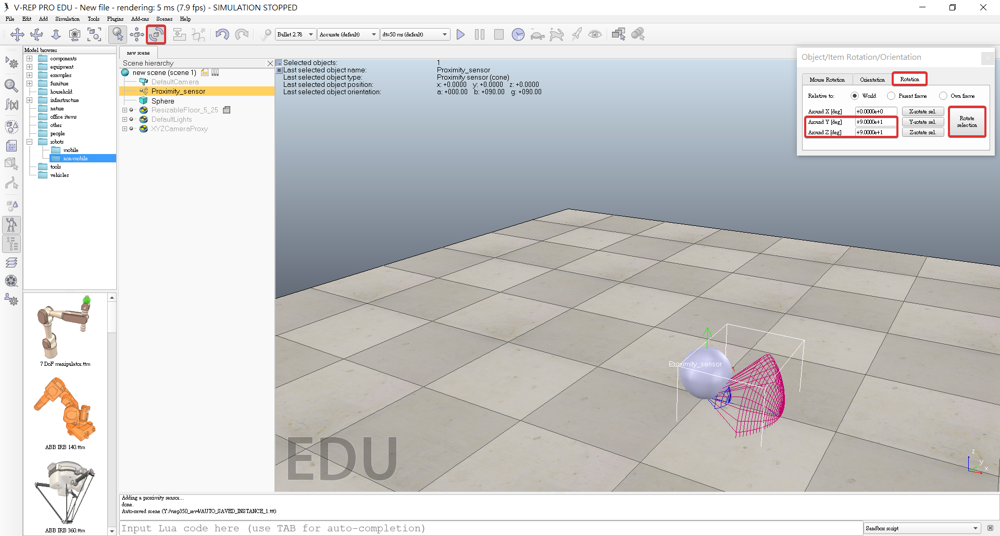
3. In the position dialog, on the position tab, we enter 0.1 for X-coord. and 0.12 for Z-coord.

4. Double-click the proximity sensor's icon in the scene hierarchy to open its properties dialog.
5. Click Show volume parameter to open the proximity sensor volume dialog.
6. Adjust items Offset to 0.005, Angle to 30 and Range to 0.15.
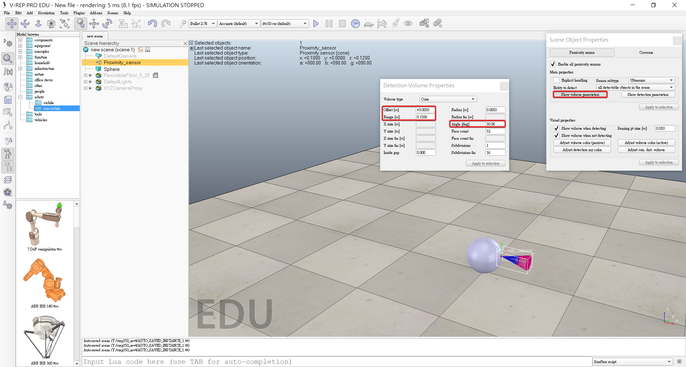
7. Click Show detection parameters in the proximity sensor properties, opens the proximity sensor detection parameter dialog.
8. Uncheck item Don't allow detections if distance smaller than then close that dialog again.
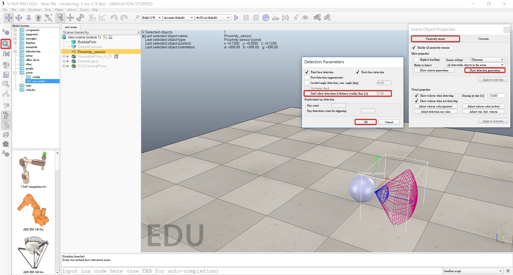
9. Double-click the proximity sensor's name, edit and enter bubbleRob_sensingNose and press enter.
C. Attaches the sensor to the body of the robot
1. Select bubbleRob_sensingNose, then control-select bubbleRob
2. Click [Menu bar --> Edit --> Make last selected object parent]
1. + 2. => Can also drag bubbleRob_sensingNose onto bubbleRob in the scene hierarchy.
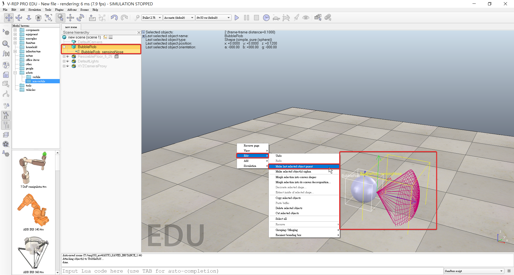
D. Add BubbleRob's wheels
1. Add a pure primitive cylinder with [Menu bar --> Add --> Primitive shape --> Cylinder]
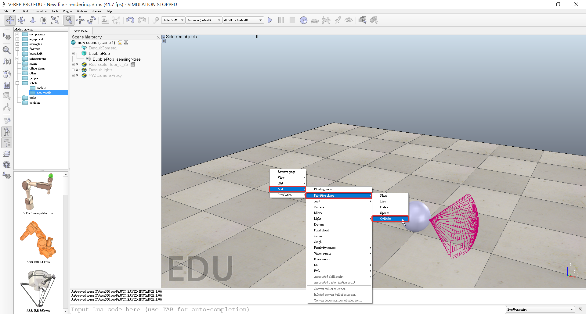
2. Dimensions (0.08,0.08,0.02)
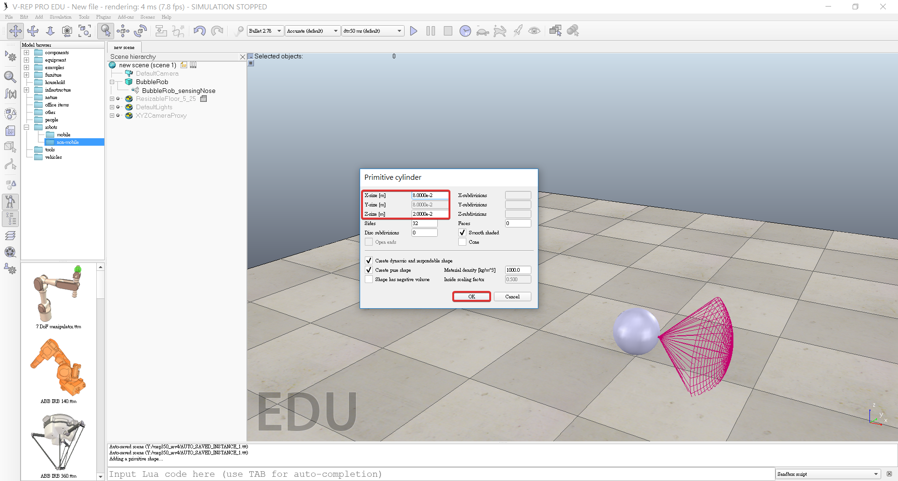
3. Enable Collidable, Measurable, Renderable and Detectable in the object common properties for that cylinder.
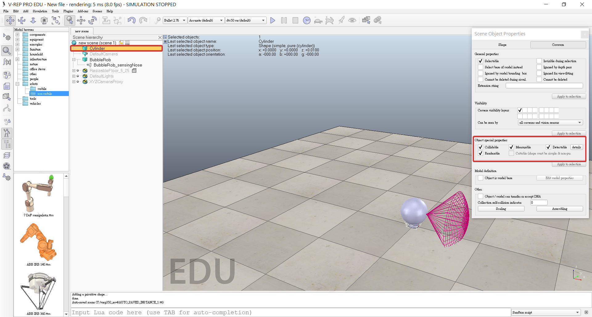
4. Set the cylinder's absolute position to (0.05,0.1,0.04)
5. Absolute orientation to (-90,0,0)
6. Change the name to bubbleRob_leftWheel
7. Copy and paste the wheel
8. Set the absolute Y coordinate of the copy to -0.1
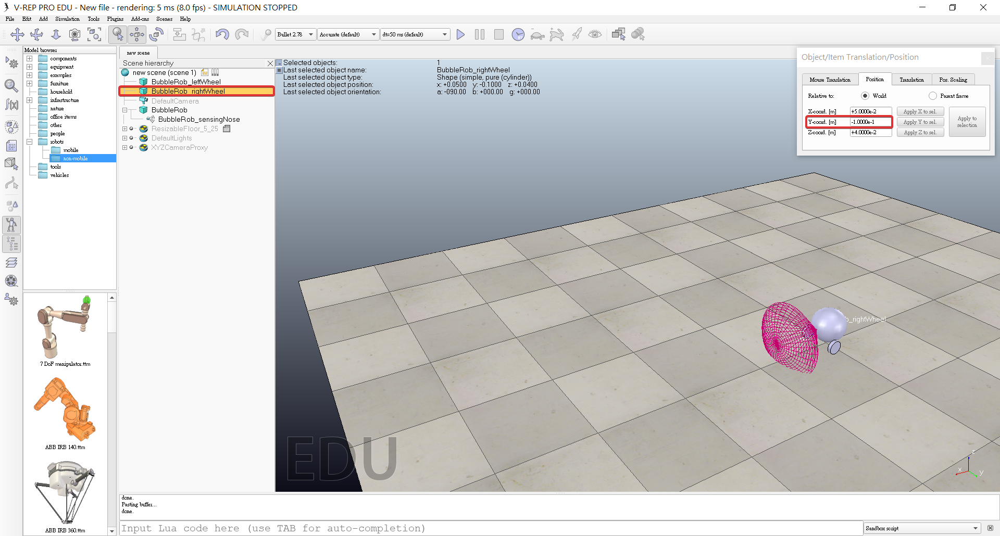
9. Rename the copy to bubbleRob_rightWheel
E. Add joints (or motors) for the wheels
1. Click [Menu bar --> Add --> Joint --> Revolute] to add a revolute joint to the scene
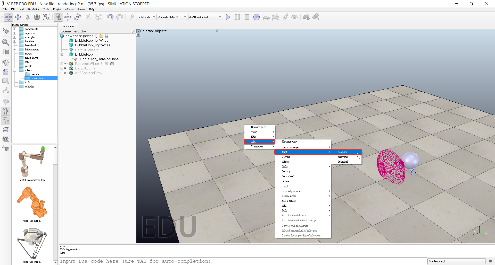
2. Keep the joint selected, then control-select bubbleRob_leftWheel
3. In the position dialog, on the position tab, we click the Apply to selection button: this positioned the joint at the center of the left wheel.
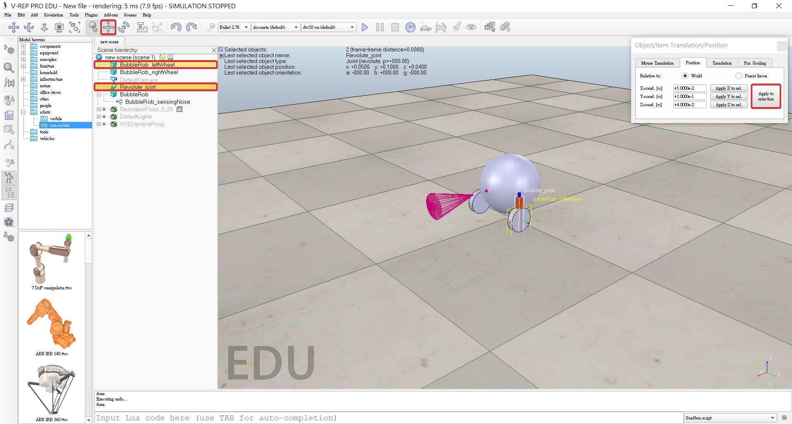
4. In the orientation dialog, on the orientation tab, we do the same: this oriented the joint in the same way as the left wheel.
5. Rename the joint to bubbleRob_leftMotor
6. Double-click the joint's icon in the scene hierarchy to open the joint properties dialog.
7. click Show dynamic parameters to open the joint dynamics propertiesdialog.
8. Enable the motor, and check item Lock motor when target velocity is zero.
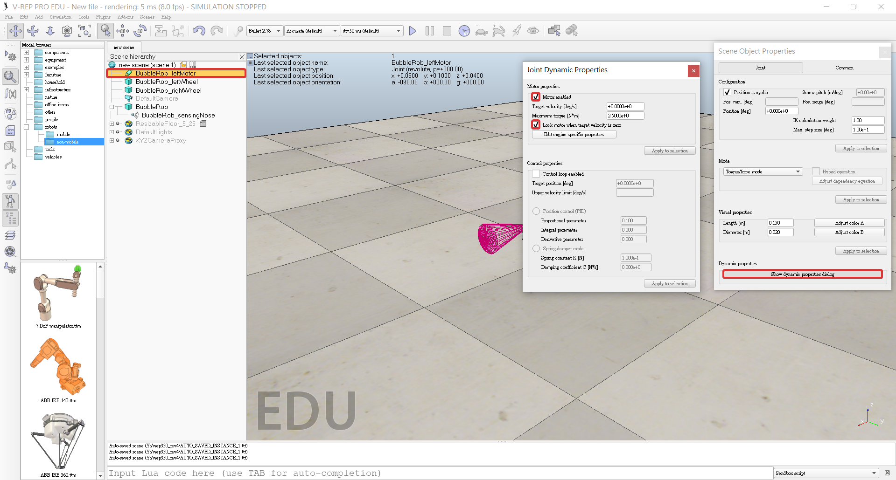
9. Repeat the same procedure for the right motor and rename it to bubbleRob_rightMotor.
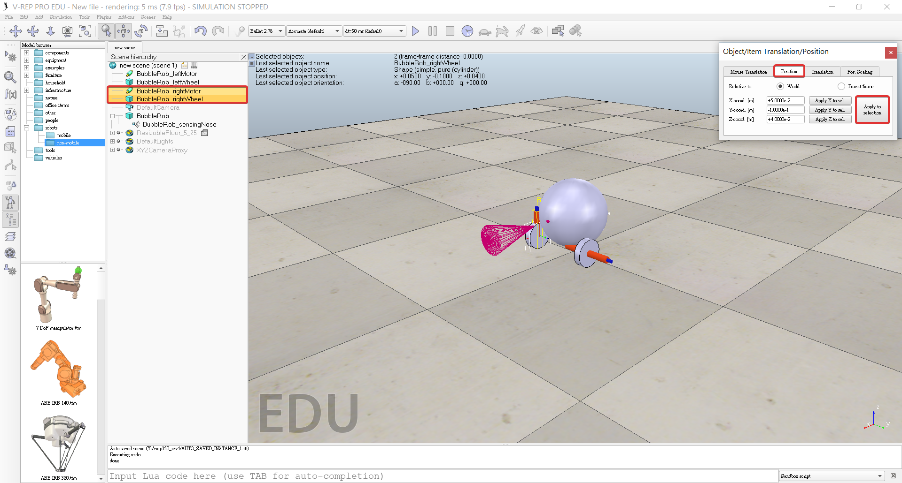
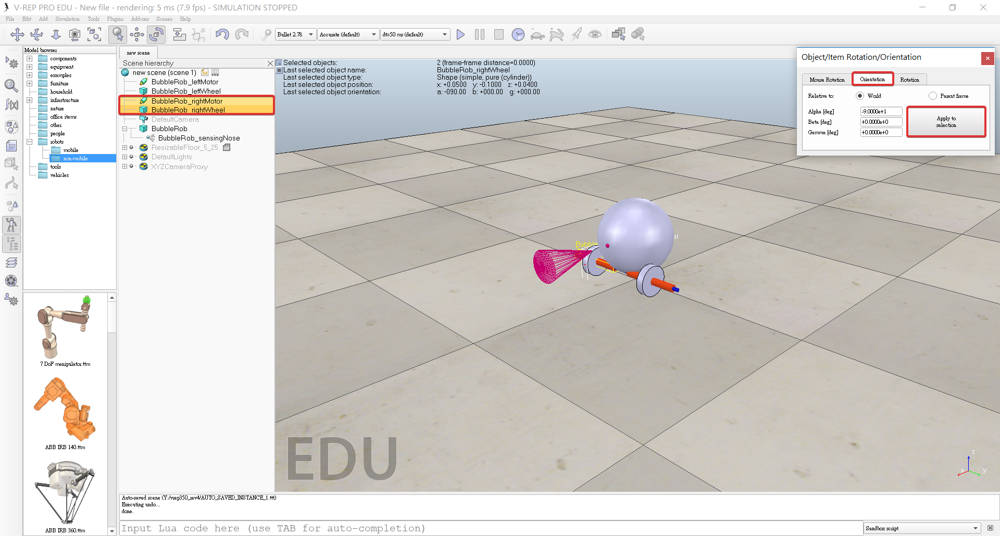
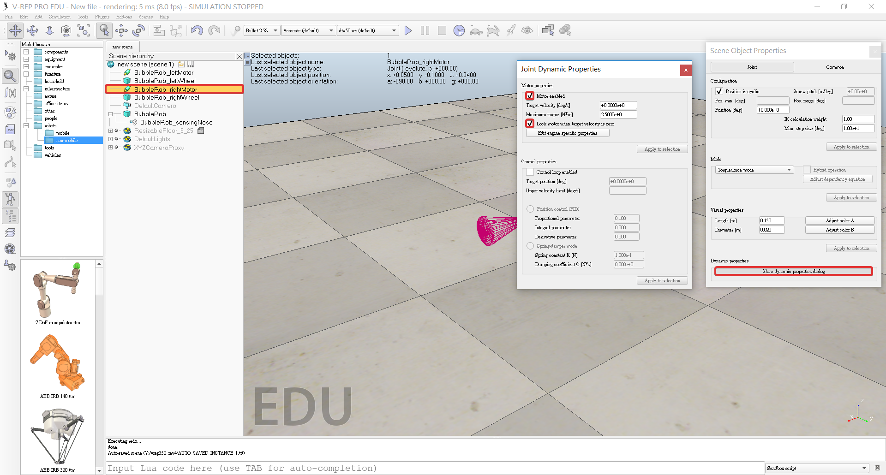
10. Attach the left wheel to the left motor.
11. Attach the right wheel to the right motor.
12. Attach the two motors to bubbleRob.
BobbleRob << Previous Next >> Experience